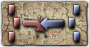
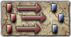
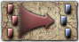
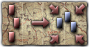
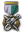
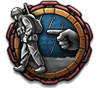
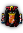
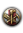
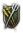
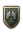

指挥官特质
原页面：Commander trait
A 指挥官特质 can change a 指挥官's skills, specialize them for different combat scenarios, change how much 经验 they get and various other effects. Traits can affect which skills are given to a commander when their skill level increases by modifying variables not visible in game called "skill factor"; higher skill factors for a skill makes it more likely to be increased on a level up.
General and field marshal
Personality traits
These traits can not be gained through experience and generally do not affect subordinate unit leaders. Conversely, they are the only traits that can appear on newly hired generals and field marshals.
| 名称 | 描述 | Personal modifier | 修正 | 技能 | Skill factor | 备注 |
|---|---|---|---|---|---|---|
| While not the most brilliant officer, he is unlikely to cause trouble. | Experience gain: -25% | 最大工事：+1 | ||||
| A natural born strategist that is able to adapt to the dynamics of the battlefield. | 攻击：+1 Planning: +1 |
攻击：+1 Planning: +1 |
(Additional) 25% chance to appear on new leaders with | |||
| Skilled but stubborn. A good enough plan can survive contact with the enemy. | 防御：+1 Logistics: +1 |
防御：+1 Logistics: +1 |
(Additional) 25% chance to appear on new leaders with | |||
| This leader has political connections which has smoothed the way for his career. Perhaps too quickly. | Experience gain: -10% Promotion cost: -50% |
Planning: +1 Logistics: +1 |
(Additional) 50% 概率 to appear on new leaders with | |||
| Brave | It takes a brave general to lead the most dangerous missions. | Division Organization Loss when Below 25%: -10.00% | 防御：+1 | Appears for | ||
| Hailed as a hero from their actions in war. | Promotion cost: -50% Reassignment duration: +50% |
攻击：+1 Planning: +1 |
Does not randomly appear on new leaders. | |||
| Dedicated to the life as an officer, with ambitions to match. | Promotion cost: -25% | Planning: +1 Logistics: +1 |
||||
| Takes their time and plans carefully. | Chance to get wounded in combat: -50% | 计划速度：-20% | 防御：+1 Logistics: +1 |
|||
| A good officer needs to lead from the front. | Chance to get wounded in combat: +50% | 计划速度：+20% | 攻击：+1 防御：-1 Planning: +1 |
|||
| This general will go out of his way to talk to the media and will always try to be in the limelight. | Reassignment duration: +100% | 攻击：+1 防御：+1 |
(Additional) 50% 概率 to appear on new leaders with | |||
| Discipline is necessary to lead an army, but some leaders take it a bit too far. | 师恢复速度：-10% | 攻击：+1 | 攻击：+1 Logistics: +1 |
|||
| Never drop a crate! | 火炮攻击：+15% | Only available to Wojtek by the event “Wojtek Never Drops A Crate”. | ||||
| Trained as an infantry officer. | 防御：+1 Planning: +1 |
拥有
| ||||
| Trained as a cavalry officer. | 攻击：+1 Logistics: +1 |
With | ||||
| Trained as an armor officer. | 攻击：+1 Planning: +1 |
拥有
With | ||||
| Trained as an engineer officer. | 攻击：+1 Planning: +1 |
拥有
| ||||
| Skilled at leading irregular units in combat. | 非战斗补给不足惩罚：-10.0% 骑兵速度：+5.00% 骆驼骑兵速度：+5.00% 非正规步兵攻击：+5.00%
|
攻击：+1 Planning: +1 |
||||
| Trained to lead colonial units in combat. | 骑兵防御：+5.00% 骆驼骑兵防御：+5.00% 步兵防御：+5.00%
|
防御：+1 Logistics: +1 |
||||
| Trained to lead militia units in combat. | Militia Defense: +5.00% Militia Speed: +5.00% Militia Organization: +5.00% |
防御：+1 Planning: +1 |
||||
| Cowed by Stalin | This character feels threatened by Stalin's purges and will not carry out his work freely for fear of being accused of treason. His performance is significantly affected. | Division Recovery Rate: -10.0% Reinforce Rate: -2.0% |
攻击：-2 防御：-2 |
可在
| ||
| Expert in guerilla warfare and sabotage operations behind enemy lines. | Equipment Capture Ratio Gain: +3.0% | 攻击：+1 Logistics: +1 |
在
| |||
| Promoted away from power | This general has been placed in a position where he has limited political and military influence, and is placed lower on supply priorities. | 损耗：+4% Supply factor: -5% |
Planning: -1 Logistics: -1 |
Appears for | ||
| One of the true heroes of the country | Organization: +10% Infantry defense: +5% |
Appears for | ||||
| Promoted from the Ranks | This character has been promoted due to their skill, being excellent at planning and taking the initiative. |
|
侦察：+5% | Is not attainable in-game | ||
| This commander insists that carrying a bagpipe, a bow and a broadsword into battle is the way to wage war. Truly an inspiration. | Chance to get wounded in combat: +65% | Division Experience Gain: +10.00% Division HP: +10.00% |
为
| |||
| This man hails from proud lineage of Samurai and remains true to the old traditions and loyalties. | Planning Speed: +5.0% Chance to get wounded in combat: +10.0% Promotion Cost -20.0% |
为
| ||||
| Expeditionary Leader | Capable of effectively leading a small force overseas. |
|
为某些
|
Exiled leaders
| 名称 | 描述 | Personal modifier | 修正 | 技能 | Skill factor | 备注 |
|---|---|---|---|---|---|---|
| Exiled Leader | This officer fought on after the defeat of their homeland. They excel in commanding other exiles that share their drive and enthusiasm for fighting. |
|
Appears for 指挥官 obtained from hosting governments-in-exile. Icon contains the flag of said government. |
Earned traits
These traits can be earned by generals collecting relevant experience. Some of them do not work when the general is used as a field marshal after promoting them. For every earned trait a general has already acquired, the gain rate for all other traits gets reduced. Half speed with one finished trait, one-third speed with two traits, and so on[1].
| 特质（消歧义） | 描述 | 效果 | Experience gained while | XP required | 备注 |
|---|---|---|---|---|---|
| Able to plan and organize the movement of large armies. | 计划速度：+10% | 在集团军层级使用作战计划。 (Does not progress with Field Marshal battle plans)[2] |
1000 | ||
| Skilled at using mobile forces to achieve victory. | Cavalry Attack: +12% Motorized Attack: +12% Mechanized Attack: +12% |
Cavalry, motorized, and mechanized ratio > 40% | 1000 | ||
| Skilled at leading infantry in combat. | Infantry Division Defense: +13% | Infantry ratio > 80% | 1000 | ||
| Surrounded by some of the best staff, this leader is able to organize and manage a larger number of units. | General Max Army Size: +6 (Not applied to Field Marshals) |
Controlling at least 24 divisions | 2000 | +2 logistics skill factor | |
| Doing the unexpected in combat can give you a large advantage. | 侦察：+25% | Is flanking the enemy or getting flanked by them | 500 | 25% chance to appear on new leaders with | |
| Possesses an intuitive understanding of the difficulties of fighting in Cold conditions. | 冬季损耗：−50% | Temperature less than -10 | 500 | ||
| Adept in the arts of crossing rivers and constructing field fortifications. | River Attack: +5% Fort Attack: +10% |
至少满足以下之一：
|
700 | ||
| A natural with Tanks and Mechanized forces. | Armor speed: +5% Armor Division Attack: +16% |
Armored ratio > 40% | 700 | +2 attack skill factor 隐藏： 50% 概率 to appear on new leaders with | |
| Skilled in Amphibious operations, Air Assaults, and Cold weather conditions - the Commando is a man of many talents. | Out of Supply: -25% | 至少满足以下之一：
|
700 | 25% chance to appear on new leaders with | |
| Entirely at home when fighting in a Desert. |
|
Fighting on terrain: |
700 | ||
| While somewhat soggy, the Swamp Fox knows his way around Swamps and Marshes. |
|
Fighting on terrain: |
700 | ||
| An excellent climber and skilled at Mountain warfare. |
|
Fighting on terrain: |
700 | ||
| Excels at fighting in Hilly terrain. |
|
Fighting on terrain: |
700 | ||
| Undeterred by rodents of unusual size, and skilled in Jungle warfare. |
|
Fighting on terrain: |
700 | ||
| Rangers lead the way, especially when it involves fighting in Forests. |
|
Fighting on terrain: |
700 | ||
| An expert in Fighting In Someone's House and Causing Havoc In People's Streets. |
|
Fighting on terrain: |
500 | ||
| An expert in performing naval invasions. The perfect guy for preparing an invasion of a hostile beach and carrying it out. | Amphibious Invasion Speed: +30.00% Invasion Preparation Time: -30.00% |
Is doing an amphibious invasion | 100 | 25% chance to appear on new leaders with |
Assignable traits
It costs 15  command power to assign a trait.
command power to assign a trait.
Field marshal
| 特质（消歧义） | 描述 | 效果 | Prerequisite Trait | Exclusive with |
|---|---|---|---|---|
| Supplies are never late, nor are they ever early. They arrive precisely when I mean them to. | Supply Consumption: −15% Enables Ability: Extra Supplies |
- | ||
| More Offensive-minded than most. | Organization Loss when Moving: −30%, Attack Skill +1 | - | ||
| Especially skilled in fighting on the Defensive. | 最大工事：+30% | - | ||
| Knows all the shortcuts when preparing for battle - Efficiency is key! | 计划速度：+25% | |||
| A strategic master mind. Given time, the well-laid plan will be the strongest. | Max Planning: +10% | |||
| Retreat is not an option. | 防御：+10% Increased chance of executing  Counter-Attack tactic when commanding a battle |
|||
| The best defence is a strong offence. | Breakthrough: +10% Increased chance of executing  Assault和 Shock tactics when commanding a battle |
|||
| Knows every trick to get reinforcements faster than anyone. | 补充率：+2% | - | - | |
| A natural leader. Men will face their worst fears when backed by a powerful leader. | 师恢复速度：+10% | - | - | |
| The art of delegation allows this leader to efficiently command several armies. | Field Marshal Max Army Group Size: +2 | - |
通用
| 特质（消歧义） | 描述 | 效果 | Prerequisite Trait | Exclusive with |
|---|---|---|---|---|
| Experience and training makes this leader an expert at commanding tanks. | Armor Division Defense: +10.00% Increased chance of executing  Blitz和 Encirclement tactics when commanding a battle |
Cavalry Expert | ||
| Able to combine the strengths of both armor and infantry. | Motorized Defense: +15.00% Mechanized Defense: +15.00% Increased chance of executing Blitz和 Encirclement tactics when commanding a battle |
Cavalry Expert | ||
| Cavalry Expert | Skilled at using mobile forces to achieve victory. | 骑兵防御：+10.00% | ||
| Assaulting a Fort holds no terror for this officer. |
Enables Ability: 攻城炮兵 |
|||
| More likely to scavenge and repair captured equipment for use by their own troops. | Equipment Capture Ratio Gain: +3.0% | |||
| A true expert in leading infantry. | Infantry Division Attack: +10.00% |  Ambusher | ||
| Ambusher | Expertly able to trick enemy forces into ambushes. | Max Entrenchment: +5.0 Recon Bonus While Entrenched: +25.0% |
||
| 两栖 | Naval invasions may need to fight for a long time before resupply can arrive. | Extra Marine Supply Grace: +240.0 Hour(s) Enables Ability: Naval Assault Plan |
- | |
| Naval Liaison | A good relationship with the navy will ensure that naval fire support will be more plentiful. | 对岸炮击加成：+25.0% | - | |
| Skilled at using probing attacks to test the enemy's strength and to wear them down. | Enables Ability: Probing Attack | - | ||
| 伞兵 | 通过将空降部队纳入我们的军队，我们可以实施强行突入，并把关键部队部署到此前无法到达的地区，从而带来新的战术机会。 | Extra Paratrooper Supply Grace: +240.0 Hour(s) Enables Ability: 滑翔机 |
- | |
| The proper use of camouflage can significantly reduce the threat of enemy air strikes. | Damage Reduction Against CAS: +50.0% Air Support (CAS) Bonus in Combat: -50.0% |
- | ||
| Improvisation Expert | An expert in solving problems with whatever means are available. | Movement Bonus On Land: +10% Enables Ability: Makeshift Bridges |
|
- |
| The skilled guerilla fighter is an expert at using natural terrain and obstacles to their advantage. | Entrenchment Speed: +50% | - | ||
| A natural understanding of how to fight in various terrains and adapt to different environments. | Terrain Penalty Reduction: +30.00% (Applied after summing all other terrain modifiers, not applied to terrain features) Cold acclimation gain factor: +10% Hot acclimation gain factor: +10% |
至少满足以下之二：
|
- | |
| Hard earned experience has taught this leader how to fight in harsh winter conditions. | Cold acclimation gain factor: +40% | - |
Status traits
These traits are gained temporarily.
| 名称 | 描述 | Personal modifier | 修正 | 技能 | Skill factor | 备注 |
|---|---|---|---|---|---|---|
| 患病 | Confined to a bed due to severe sickness. | 技能加成系数：-50% Cannot use abilities |
Can be randomly gained by commanders who have not gotten this trait in the past 180 days and 75% of whose commanded divisions who are in | |||
| Wounded | A bad wound will take some time to recover from. | 技能加成系数：-50% Cannot use abilities |
Can be randomly gained by commanders after they have won or lost a battle. Base chance to gain is 0.1% if the commander won the battle and 0.5% if they have lost the battle, though this can be modified by traits. Expires after 90 days. | |||
| Reassigned | This leader is returning from a far-away post the government had assigned him to to keep him from plotting. | 技能加成系数：-100% Cannot use abilities |
在「抵抗运动」中，西班牙内战爆发时授予 Appears for 2 commanders of  Sideline Disloyal Officers | |||
| Disgruntled | This man is not happy and makes no secret of it. | 攻击：-2 防御：-2 Planning: -2 Logistics: -2 |
Not used by the game. | |||
| Demoted | Being demoted won't make anyone happy and this leader is no exception. | 攻击：-1 防御：-1 Planning: -1 Logistics: -1 |
Not used by the game. | |||
| Addiction can be a bad thing, but it's really under control. Really. | Appears for | |||||
| Substance Addict | This man's addiction is clearly affecting his judgement, and not in a good way. | 攻击：-2 防御：-2 Planning: -2 Logistics: -2 |
With In practice, because only commanders with | |||
| Hidden Sympathies | This general has voiced some disloyal opinions in private spheres, and will most likely lend his support to insurrections started by subversive elements. | Assigned to a random owned general after completing the Lower Army Command Loyalty decision when preparing for a generic civil war. These generals are guaranteed to join the player's side in the civil war. | ||||
| Recently Promoted | Adjusting to the responsibilities of the new rank. | 攻击：-1 防御：-1 Planning: -1 Logistics: -1 |
Gained when upgrading a general to field marshal. Expires after 100 days. | |||
| A competent man is good. If he is motivated, then that is better | 师恢复速度：+10% | 攻击：+1 | Gained after completing faction goal Subjugate the Faction. Expires after 270 days. | |||
| Wounded by Rioters | This general has been wounded trying to contain rioters | 技能加成系数：-75% Cannot use abilities |
With | |||
| Disillusioned with the government | This general is severely disillusioned with the government | 攻击：-3 防御：-3 Planning: -3 Logistics: -3 |
With | |||
| Determined | 攻击：+1 防御：+1 |
当 |
海军上将
Personality traits
These traits can not be gained through experience. Conversely, they are the only traits that can appear on newly hired admirals.
| 特质（消歧义） | 描述 | 效果 | 备注 |
|---|---|---|---|
| While not the most brilliant officer, he is unlikely to cause trouble. | −25% Leader experience gain | ||
| This officer instills a sense of respect in subordinates and enemies alike. | Navy Organization: +5 Enemy Retreat Chance: +20.00% |
||
| This officer has studied the fine art of ballistics. | (Additional) 50% 概率 to appear on new leaders with | ||
| What's the worst that could happen? | 伤害：+20.00% 防御：-10.00% |
||
| This officer knows how the ship actually works. | 受到致命一击的概率：-5.0% | ||
| This Admiral has a knack for giving the right quote to the right person. | +10% Fleet Attack and Defense if commanding the Pride of the Fleet | ||
| The difference between a bold attack and a stupid attack is that the bold attack succeeds. | Naval Speed: +10% 伤害：+5.00% |
||
| Dedicated to the life as an officer, with ambitions to match. | +10% Commander Experience Gain | ||
| Naval air power will never become a viable alternative to big guns. | Naval AA attack: -20.00% Capital Ship Attack: +10.00% |
||
| Naval air power is the superior alternative to big guns. | (Additional) 50% 概率 to appear on new leaders with | ||
| This officer is a bit more salty than most people. | 首次接触时的舰船数量：-25% | ||
| "Engage the enemy less closely. A lot less closely." | Retreat Decision Chance: +25% 伤害：-5.00% |
||
| It takes 3 years to build a ship. It takes 300 years to build a tradition. | 首次接触时的舰船数量：+25%撤退决策几率：-25% | ||
| Cowed by Stalin | This character feels threatened by Stalin's purges and will not carry out his work freely for fear of being accused of treason. His performance is significantly affected. | Retreat Decision Chance: -25.0% 攻击：-2 防御：-2 |
可在
|
Earned traits
| 特质（消歧义） | 描述 | 效果 | Experience gained while | XP required | 备注 |
|---|---|---|---|---|---|
| Able to rapidly Disengage from Naval Combat. | +20% Retreat decision chance +15% Fleet speed while retreating +5% Convoy speed while retreating |
Have a task force in combat where every ship in it has over 32 knots speed. | 500 | 25% chance to appear on new leaders with | |
| The Sea Wolf is particularly skilled in Convoy Raiding | +20% Submarine Attack | More than 80% submarines in fleet. | 700 | 25% chance to appear on new leaders with | |
| The Spotter pays special attention to keeping an eye out for enemy fleets. | +10% Spotting speed | Spotting the enemy. | 500 | ||
| An expert in keeping small ships away from the big ships. | +20% 屏护效率 | More than 50% screening vessels in fleet. | 500 | ||
| A master of Fleet Positioning. | +25% Positioning | Having the advantage in combat. | 500 | ||
| An expert in the nascent field of naval aviation, the Air Controller is a natural choice to command carriers. | +10%出击效率 +10% Naval Air Targeting from Carriers |
Has carrier with air wings on a mission or carrier has air wings in combat it is a part of. | 500 | ||
| Determined to defend our home waters with the most powerful ships our navy can muster. | +10% Capital Ship Armor | Commanding or fighting 主力舰. | 500 | ||
| This officer has spent a lot of time in arctic waters and learned how to avoid most of the icebergs. | 损耗：-8% | While weather is |
1000 | ||
| An expert in fighting close to shore, this officer understands how to hide behind islands and in fjords to rain destruction upon the enemy. | Fjords and Archipelagos:
|
Fighting in terrain: Fjords and Archipelagos | 1000 | ||
| This officer is an expert in fighting on the high seas. | Deep Ocean:
|
Fighting in terrain: Deep Ocean | 1000 | ||
| Fighting in shallow waters has its own challenges. This officer has mastered them. | Shallow Sea:
|
Fighting in terrain: Shallow Sea | 1000 |
Assignable traits
Admirals may get traits assigned if they have the prerequisite earned traits. Assigning traits cost 15  指挥点数. There is, however, no experience requirement for these traits. The maximum of assignable traits depends on the admiral's level.
指挥点数. There is, however, no experience requirement for these traits. The maximum of assignable traits depends on the admiral's level.
| 特质（消歧义） | 描述 | 效果 | Prerequisite Trait | Exclusive with |
|---|---|---|---|---|
| This officer has completed the government-mandated training course on how not to be seen. | 可见度：-10% | 独狼（Lone Wolf） | ||
| 独狼（Lone Wolf） | While organising a large fleet is a difficult task, so is using a small force to its maximum potential. | 敌方舰队规模惩罚：+10% | ||
| A master of stealth, this submarine officer has learned how to escape his pursuers. | 鱼雷暴露几率：-15% | |||
| This officer knows torpedoes like no other, and is able to get the most out of them. | Torpedo Screen Penetration +25% | 至少满足以下之一：
|
||
| Search Pattern Expert | Information is ammunition! | 发现速度：+20% | - | |
| 「驱逐舰领舰」 | Balancing boldness and discretion, this officer has become the ideal commander for light forces. | 驱逐舰：
|
- | |
| Cruiser Captain | This officer has shown great skill in operating cruisers. | 轻型巡洋舰：
|
- | |
| All sailors know the terror of these creeping weapons, the low hiss of the fuse, and the sudden BLAST! | Naval minelaying efficiency +25% Naval minesweeping efficiency: +25% 水雷规避：+25% |
- | ||
| Launching a plane from the deck of a ship is fairly simple. It's launching the other two dozen at the same time that's the problem. | Sortie Efficiency: +10% | - | ||
| Shooting at a stationary target on land with naval artillery is almost unsporting. Almost. | Shore Bombardement Bonus: +25% | - | ||
| This officer likes big guns and is incapable of lying. | 主力舰攻击：+15% | - | ||
| There is nothing wrong with our bloody ships. Not today, not tommorrow, not ever! | 受到致命一击的概率：-25% | - | ||
| Used correctly, smoking can in fact save lives. | Retreat Decision Chance +25% | 独狼（Lone Wolf）或 |
- | |
| Hitting a ship moving at a speed of 25 knots with a relative angle of 72 degrees at a distance of 8 kilometers is really just a bit of simple math. | 鱼雷命中几率：+10% | - | ||
| 「装填训练大师」 | "Shoot them again, they're not dead yet!" | Torpedo cooldown: -25% | - | |
| Hunter-Killer | In the deadly game of cat and mouse, this officer is most certainly the cat. | Submarine Attack: +10% Submarine Detection: +20% |
「驱逐舰领舰」或 Search Pattern Expert | - |
| Realizing the danger posed to even our most powerful ships by airplanes, the Fly Swatter swiftly disposes of anything that flies. | +10%海军防空攻击 | 「驱逐舰领舰」或 Cruiser Captain | - | |
| Fighter Director | This officer ensures friendly - or at least neutral - skies. | 战斗机出击效率：+20% | ||
| An expert in the use of dive bombers. | 近距空中支援（舰载）：
|
Fighter Director | ||
| Bombs make holes that let in air. Torpedoes make holes that let in water. Guess which sinks a ship faster? | 海军轰炸机（舰载）：
|
Fighter Director | ||
| "Put the next salvo half a meter aft, right into their magazine." | Chance to score Critical hit: +10% | 「危机魔术师」 | ||
| 「危机魔术师」 | "Condenser Tubes are broken, Captain. Repairs will take at least 6 weeks. But I can do it in 3 hours." | Effects of sustained Critical Hits: -50% |
Status traits
These traits are gained temporarily.
| 名称 | 描述 | Personal modifier | 修正 | 技能 | Skill factor | 备注 |
|---|---|---|---|---|---|---|
| Determined | 攻击：+1 防御：+1 |
Can be temporarily added for |
Political traits
These traits can not be gained through experience and do not affect subordinate unit leaders. They also have no immediate effects on the abilities of the leader. They usually only determine with what side of a civil war the leader will side, but some also indicate which leaders are affected or improved by the completion of certain 国策.
| 名称 | 描述 | 备注 |
|---|---|---|
 Nationalist Sympathies |
This leader harbors sympathies for the Nationalist cause. | 当「抵抗运动」激活时为
|
| Falangist Loyalties | This leader is loyal to the Falange. | 当「抵抗运动」激活时为
|
| Carlist Loyalties | This leader is loyal to the Carlists. | 当「抵抗运动」激活时为
|
| Republican Loyalties | This leader is loyal to the democratic Republican government. | 当「抵抗运动」激活时为
|
| Stalinist Loyalties | This leader is loyal to the Stalinist communists. | 当「抵抗运动」激活时为
|
| Anti-Stalinist Loyalties | This leader is loyal to the anti-Stalinist communists. | 当「抵抗运动」激活时为
|
 Zveno Member |
This leader is a member of the Zveno and will side with this faction if conflict breaks out. | 当
|
| Tsar Loyalist | This leader is loyal to the Tsar and will side with the monarchist government if conflict breaks out. | Appears for |
| Fatherland Front Sympathizer | This leader harbors sympathies for the Fatherland Front and will side with this organization if conflict breaks out. | Appears for |
| Kemalist Champion | This leader is a staunch adherent to the tenets of Kemalism and will fight to defend those principles. | 当
|
| 坚定的君主主义者 | This leader respects and reveres the monarchy as a Greek institution. | 当
|
| Venezelist Loyalist | This leader is a believer in the political doctrines of the arch-republican Eleftherios Venizelos. | 当
|
| Marxist Acolyte | This leader is a communist who believes in the theories espoused by Karl Marx. | 当
|
| Fascist Sympathizer | This leader is sympathetic to the tenets of fascism. | 当
|
| Russian Empire Veteran | Former member of the Imperial Russian army. | Is not attainable in-game (?) |
| Veteran Anti-Bolshevik | Has fought against communist elements and will do so again. | Appears for |
| Supporter of Walery Sławek and the Sanation Left. | Appears for | |
| Supporter of Edward Rydz-Śmigły and the Sanation Right. | Appears for | |
 Peasant Sympathiser |
Holds sympathies for the peasants and working class of Poland. | 当
|
| Monarchist Sympathizer | This character is loyal to the White Russians and will side with them in the event of a civil war. | Appears for |
| Stalinist | 该人物忠于斯大林，不会被任何反对派别拉拢。 This character can still be purged. |
Appears for |
| Trotskyist | This character is loyal to the Trotskyist cause and will side with the Trotskyists in the event of a civil war. | Appears for |
| Bukharinist | This character is loyal to Bukharin and his followers and will side with them in the event of a civil war. | Appears for |
 Foreign Military Advisor |
Time spent abroad is an opportunity to study tactics we may one day find ourselves pitted against. | Appears for |
| Commander in Chief | Appears for | |
| This commander ultimately holds loyalty towards the Germans and National Socialists. | Appears for | |
| A member of the Hungarian order of merit, the Order of Vitéz. | Appears for | |
| Communist Sympathizer | Supporter of the communist cause. | 拥有该特质的将领在内战期间始终忠于共产主义派别。 |
| This character is a supporter of the Imperial Way Faction. | Appears for | |
| This character is a royal of either direct, Miyake or Shinnōke descent. | Appears for | |
| Tōhōkai Sympathies | Supporter of the Tōhōkai's cause. | Appears for |
| Army Loyalist | Will oppose the Government in the case of a Civil War. | Appears for |
| Civilian Government Supporter | Will join the Government in the case of a Civil War. | Appears for |
| This commander ultimately swears loyalty to Britain, and will leave if we end up in a war against it. | Appears for | |
| Loyalty to Pakistan | This commander will join Pakistan given the option. | Appears for |
| Loyalty to India | This commander swears loyalty to India and will refuse to join any fascist uprisings. | Appears for |
| Golden Square Member | The Golden Square are a clique of high ranking military officials who desire a new path for Iraq, leaning into the Pan-Arab ideology and willing to work with anyone in order to achieve their goals. | Appears for |
| Survivor of the Long March | Participated in the Long March. | Appears for the |
| Dubious Loyalty | This character's loyalties are not well known, and they may likely defect to the communist party if the opportunity arrives. | 当 Commanders with this trait are likely to defect to the |
| This character's loyalties are not well known, and they may likely defect to the communist party if the opportunity arrives. | 当 Commanders with this trait are likely to defect to the | |
| Dubious Loyalty | This character's loyalties are not well known, and they may likely defect to the communist party if the opportunity arrives. | 当 Commanders with this trait are likely to defect to the |
| Dubious Loyalty | This character's loyalties are not well known, and they may likely defect to the communist party if the opportunity arrives. | 当 Commanders with this trait are likely to defect to the |
| Loyalty to Indonesia | This commander swears loyalty to Indonesia and will oppose the Dutch in any revolution. | Appears for the |
| This commander swears loyalty to the Netherlands and will fight on behalf of the Dutch in a revolution. | Appears for the |